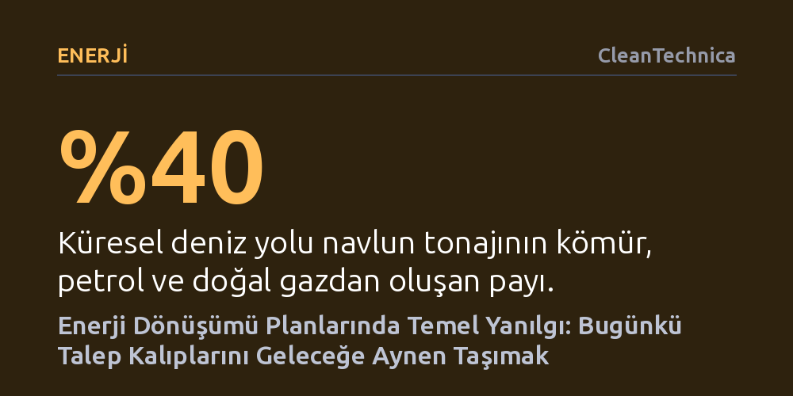

ENERJI · CleanTechnica · 2026-10-25
Enerji dönüşümü modelleri bugünkü pazar büyüklüğünü geleceğe dondurarak aktardığı için gereken temiz yakıt ve altyapı ihtiyacını yapay biçimde şişiriyor. Oysa elektrifikasyon ve verimlilik arttıkça fosil yakıt taşımacılığı gibi devasa talep kalemleri kendiliğinden ortadan kalkıyor.
Yeşil dönüşümün çözüm teknolojilerinden önce, bizzat çözülmeye çalışılan enerji talebinin süreç içinde nasıl küçüleceğini hesaba katmak gerektiğini gösteriyor.

Enerji dönüşümüne dair hazırlanan senaryoların ve raporların büyük kısmı, ilk bakışta fark edilmesi zor ama sonuçları son derece ağır bir varsayımla yola çıkıyor: Bugünün pazar büyüklüğünü ve tüketim kalıplarını geleceğe olduğu gibi dondurarak aktarmak. Bu yaklaşım benimsendiğinde, dönüşümün analitik hedefi mevcut fosil sistemin bugün tedarik ettiği her şeyin yerine düşük karbonlu birebir bir ikame bulma arayışına indirgeniyor. Oysa gerçek dünya böyle işlemiyor.
Dönüşüm ilerledikçe endüstriler yapı değiştiriyor, teknolojiler sektör sınırlarını aşarak birbiriyle rekabet ediyor, talep fiyat sinyallerine doğrudan tepki veriyor ve mevcut enerji sistemine hâkim olan bazı devasa emtialar kendiliğinden küçülüyor. Talebi bugünkü hacminde sabit varsaymak, çözülmesi gereken ikame problemini gereksiz yere büyüterek içinden çıkılmaz bir hale getiriyor. Sorunun büyüklüğü baştan yanlış tanımlandığında, ihtiyaç duyulacak temiz yakıt, elektrik iletim hattı ve finansman tahminleri de gerçeklikten tamamen kopuyor.
Bu metodolojik hatanın en somut örneği küresel deniz taşımacılığında görülüyor. Günümüzde küresel deniz yolu navlununun tonaj bazında yaklaşık yüzde 40'ını kömür, petrol ve doğal gaz taşımacılığı oluşturuyor; işlenmemiş demir cevheri ise bu paya yüzde 15 daha ekliyor. Enerji sistemleri elektriklendikçe, çelik üretim yöntemleri dönüştükçe ve fosil yakıt talebi azaldıkça, bu yakıtları taşıyan dev tanker ve kuru yük filolarına olan ihtiyaç da kademeli olarak ortadan kalkacak. Üstelik iç su yolları ve kısa mesafe kıyı hatları bataryalı elektrikle çalışır hale geldikçe, denizciliğin gereksinim duyacağı sıvı yakıt hacmi kökten daralacak.
Bu dinamikler hesaba katıldığında, denizcilik sektörünün 2100 yılındaki yıllık yakıt talebi yaklaşık 70 milyon tona kadar gerileyebilir. Oysa mevcut tüketimi geleceğe uzatan ana akım modeller yüz milyonlarca tonluk yakıt ihtiyacı öngörüyor. Aradaki bu devasa uçurum, sermaye yatırımları açısından kritik bir fark yaratıyor; çünkü ne kadar biyokütleye, sentetik yakıta ve yenilenebilir elektriğe ihtiyaç duyulacağı doğrudan bu tahminlere göre belirleniyor. Karayolu taşımacılığı hızla elektriklenirken kıt kalan sürdürülebilir sıvı yakıtların asıl talibi havacılık olacak; denizciliğin gelecekteki talebini şişirmek kıt biyodizel kaynaklarının tahsisinde büyük planlama hatalarına yol açıyor.
Varsayımların yatırımları nasıl yanlış yönlendirdiğinin bir diğer çarpıcı örneği ise hidrojen ekonomisi anlatısıdır. Küresel hidrojen heyecanı, yeşil hidrojenin taşımacılıktan binaların ısıtılmasına, elektrik depolamadan sanayiye kadar her alanda fosil yakıtlarla rekabet edebilecek kadar ucuzlayacağı varsayımı üzerine inşa edildi. Ancak üretim ve taşıma maliyetlerinin ekonomik gerçekleri alt alta konduğunda, hidrojenin pahalı kalması nedeniyle hitap edebileceği gerçek pazarın sanılandan çok daha dar olduğu ortaya çıkıyor.
Buna rağmen hükümet politikaları, kamu sübvansiyonları, şirket yapılanmaları ve yatırım planları çoktan o şişirilmiş devasa pazar beklentisine göre kurgulandı bile. Makalenin çarpıcı tespitiyle, "Kurumlar, kendilerini yaratan varsayımlar kadar hızlı yok olmuyor." Bir vaat etrafında milyarlarca dolarlık bütçeler, bürokratik kadrolar ve siyasi taahhütler biriktiğinde, rota değiştirmek salt analitik bir düzeltme olmaktan çıkıp çetin bir kurumsal direnç problemine dönüşüyor. Bu durum, şebeke iletim hatlarını güçlendirmek veya mevcut ısı pompalarını yaygınlaştırmak gibi heyecan vermeyen ama asıl işi gören çözümlerin gölgede kalmasına neden oluyor.
Benzer talep dondurma refleksi karbon yakalama, havacılık ve yapay zekâ veri merkezleri projeksiyonlarında da tekrarlanıyor. Gelecekteki fosil yakıt talebi abartıldığında, atmosferden çekilmesi gerektiği hesaplanan karbon miktarı da yapay biçimde büyütülüyor; bu yapay açık da henüz maliyeti ve ölçeği belirsiz devasa doğrudan hava yakalama teknolojilerini meşrulaştırmak için kullanılıyor. Oysa orman ve sulak alanların restorasyonu ile sanayiden çıkan yoğun biyojenik karbondioksitin depolanması gibi çok daha somut ve rasyonel seçenekler önceliklendirilmeyi bekliyor. Veri merkezlerinde ise yazılım, çip mimarisi ve işlem verimliliğindeki devrimler görmezden gelinip bugünün güç tüketimi geleceğin işlem yükleriyle çarpılarak hayali kriz senaryoları üretiliyor.
Havacılık sektöründe de uçuşların yaklaşık yüzde 91'i keyfi ve zorunlu olmayan seyahatlerden oluşuyor; dolayısıyla bilet fiyatlarındaki artışa karşı talep son derece hassas. Sürdürülebilir havacılık yakıtlarının yüksek maliyeti uçuş talebini frenleyebilir, ancak buradaki asıl bilinmezlik mühendislikte değil, siyasette yatıyor: Hükümetlerin seyahati daha pahalı kılan politikalara ne kadar tahammül edebileceği belirsiz. Enerji dönüşümü zaten olgun ve işe yarayan teknolojilere sahip; asıl yapılması gereken, çözümün gösterişine odaklanmak yerine çözülmeye çalışılan sorunun zamanla nasıl küçüleceğini dürüstçe hesaplayabilmektir.